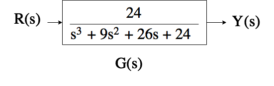
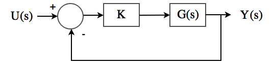

EECS 460 Discussion
Winter 2017
Introduction
Jonas Kersulis, GSI
kersulis@umich.edu- PhD student of Dr. Ian Hiskens
- Power and Energy major
- Controls minor
Meta
Office hours in EECS 2420
- Tuesday 3-4 PM (day before hw due, hour before discussion)
- Friday 1-2 PM (4th day covered)
Discussion format
- Review and motivation
- Problems to illustrate major concepts (similar to hw problems)
- Your hw problem questions
At times I will encourage you to solve problems in groups.
Requests welcome, e.g. if you're studying for the midterm and something isn't making sense, let me know and I'll make time for it.
I will post discussion notes after Monday's discussion. (No need to copy slides during discussion.)
Week 1 | 2017-01-09/10
- Control system representations
- Laplace transform
- Partial fractions
Motivation
- Describe systems using mathematics
- Work in frequency domain:
- Common operations become easier
- Closer to intuitive block form
- Transfer function: input/output relationship is algebraic
Laplace transform: tool for going from time domain to frequency domain
$\mathcal{L}\{f(t)\} = F(s) = \int_{0^-}^\infty f(t)e^{-st}dt$Ex. if $f(t) = e^{-at}u_s(t)$, $F(s) = \frac{1}{s+a}$
| Step | Tool |
|---|---|
| 1. Express system using diff. eq. | Physics |
| 2. Take $\mathcal{L}\{\cdot\}$ | Transform table |
| 3. Analyze | Algebra |
| 4. Take $\mathcal{L}^{-1}\{\cdot\}$ to obtain time signal | Partial fractions, transform table |
Problems
- Given $F(s) = \frac{2}{(s+1)(s+2)}$, find $f(t)$.
- Given $F(s) = \frac{1}{s^2 + 6s + 9}$, what is $f(t)$?
- Given a system with input $u(t)$, output $y(t)$, and dynamics given by $$\frac{d^3y(t)}{dt} + 12\frac{d^2y(t)}{dt} + 32\frac{dy(t)}{dt} = 32u(t),$$
a. Find the transfer function.
b. Solve for the output $y(t)$ given the input $u(t) = u_s(t)$.
Assume zero initial conditions.
Week 2 | 2017-01-17
- Control system representations for more complicated systems
- State-space <--> transfer function
- Block diagram reduction
Motivation
- Often we have several states and multiple inputs or outputs.
- We also frequently encounter complex systems best expressed with block diagrams.
We still want to be able to find transfer functions.
Tools:
- State-space representation
- Block diagram reduction
From lecture
From lecture
Problem 1
Part A: find a state-space representation of the transfer function:
Part B: find a state-space representation of the transfer function:

Problem 2
Go the other way: find the transfer function for the following state-space representation.
$$ \begin{align} \begin{bmatrix} \dot{x}_1 \\ \dot{x}_2 \\ \dot{x}_3 \end{bmatrix} &= \begin{bmatrix} 0 & 1 & 0 \\ 0 & 0 & 1 \\ -a_3 & -a_2 & -a_1 \end{bmatrix}\begin{bmatrix} x_1 \\x_2 \\x_3 \end{bmatrix} + \begin{bmatrix} 0 \\ 0 \\ 1 \end{bmatrix}u \\ y &= \begin{bmatrix} b_2 & b_1 & b_0 \end{bmatrix}\begin{bmatrix} x_1 \\ x_2 \\ x_3 \end{bmatrix} \end{align} $$Problem 3
Reduce the block diagram and write its transfer function.

Week 3 | 2017-01-23
- Signal flow graphs and Mason's gain formula
- Compare to block diagram reduction for finding transfer functions
- Linearization
Motivation
Signal flow and Mason's gain formula- Block diagram reduction is messy, and when we want multiple transfer functions, we must reduce multiple times. Gross.
- A signal flow diagram encodes the same system information.
- Mason's gain formula allows us to read off reusable values and combine them to find multiple transfer functions efficiently. No more system rewriting!
Linearization allows us to apply our powerful linear analysis tools to nonlinear systems locally. This is often enough to classify stability of equilibria, and even to design controllers.
Problem 1
Find the transfer function $\frac{E(s)}{U(s)}$.

Problem 2
Part A
Use block diagram reduction to find the transfer function $\frac{Y(s)}{U(s)}$.

Step 1

Step 2

Step 3

Step 4

Step 5
Step 6

Part B
Find the same transfer function using Mason's gain formula.Problem 3
Consider the following nonlinear circuit:

Voltage across the nonlinear resistor is related to current as follows: \begin{align*} i(t) &= 2e^{0.1V_R(t)}. \end{align*} Find the differential equation modeling the circuit, then linearize any nonlinear terms. Assume a nominal input of $V_N(t) = 0$.
Week 4 | 2017-01-30/31
- BIBO stability
- Linearization
- Steady-state error
Motivation
- Stability is a key feature of control systems
- Assess in frequency domain -- no need to try various inputs or simulate time domain behavior
- Another linearization example to drive home the process. Make sure you're comfortable with linearization.
- Steady-state error: how well will our control systems track various inputs?
Problem 1
Determine stability of the following closed-loop systems. If given, $M(s)$ is the closed-loop transfer function.Part A $$M(s) = \frac{3}{s(s+1)(s+2)}$$
Part B
where $G_1(s) = \frac{7}{2s+1}$.
Part C where $G_2(s) = \frac{7K}{2s+1}$ (answer should be in terms of $K$).
Problem 2
Consider the system modeled by the following differential equation: \begin{align*} \frac{d^2\theta}{dt^2} + K\frac{d\theta}{dt} + \cos \theta &= u(t) \end{align*} The applied input is $u(t)$, the output is $\theta$, and we are interested in changes around the nominal input value $u_N = 0$.Part A
Linearize the system to obtain a small-signal state-space model.
Part B
Find the transfer function of the linearized state-space model.
Part C
Comment on the stability of $G(s)$ from Part B.
Part D
Now comment on the stability of the closed-loop system below, where $G(s)$ is the transfer function computed in Part B.
Problem 3
Consider a unity-feedback system with forward path transfer function $G(s) = \frac{1}{s(s+2)}$ Find the steady-state error for step, ramp, and parabolic inputs.
Week 5 | 2017-02-06/07
Second-order systems (GK section 5-6)
- Prediction of qualitative responses
- Designing to meet specs
- Previously looked at steady-state response ($t\to\infty$).
- Now looking at transient response ($t$ near 0).

Second-order system

\begin{align} \frac{Y(s)}{R(s)} &= \frac{\omega_n^2}{s^2 + 2\zeta\omega_ns + \omega_n^2} \end{align}
Step response: $$ y(t) = 1 - \frac{e^{-\zeta\omega_nt}}{\sqrt{1 - \zeta^2}}\sin\left(\omega_n\sqrt{1-\zeta^2}t + \arccos\zeta\right),~t\geq 0 $$
Poles: \begin{align} s_1,s_2 &= -\zeta\omega_n\pm j\omega_n\sqrt{1 - \zeta^2} = -\alpha \pm j\omega \end{align}
Poles: \begin{align} s_1,s_2 &= -\alpha \pm j\omega \\ \alpha &= \zeta\omega_n \\ \omega &= \omega_n\sqrt{1-\zeta^2} \end{align}
- $\alpha$ is the damping factor
- $\zeta$ is the damping ratio
- $\omega_n$ is the undamped natural frequency
- $\omega$ is the damped frequency
Overshoot and peak time
From GK Section 5-6-3, percent maximum overshoot is $$ 100e^{-\pi\zeta/\sqrt{1-\zeta^2}} $$
Peak time is $$ t_\text{max} = \frac{\pi}{\omega_n\sqrt{1-\zeta^2}} $$
Addition of poles and zeros
Read GK Section 5-9! Also good to play with systems in MATLAB.
Problems
Problem 1
Consider the following mechanical system:

where $x(t)$ is displacement (and also output), $f(t)$ is the applied input with nominal $f_N = 10N$, and the nonlinear spring applies a force $f_s(t) = 2x_s^2(t)$.
Part A
Find the linearized state-space representation of the system. Assume that you are concerned with small changes around the equilibrium point.Part B
Find $\bar{G}(s) = \frac{\Delta Y(s)}{\Delta U(s)}$, the transfer function of the linearized system.Part C
Comment on the stability of the linearized system.Part D
Qualitatively predict the step response of this system.Part E
Now suppose we have a design requirement: overshoot of the step response cannot exceed 5\%. Determine values of $D$ that satisfy this requirement (if any).Part F
While satisfying the constraint in part (e), is it possible to also achieve a peak time $T_p \leq 2$ seconds? If so, find the values of $D$ that meet both requirements.Part G
Given these constraints, what type of step response will we see? Revise your predicted qualitative step response.Problem 2
Suppose $D = 4.2$ in the Problem 1 system, and the transfer function is $$ \bar{G} = \frac{\Delta Y(s)}{\Delta U(s)} = \frac{1}{s^2 + Ds + 4\sqrt{5}} $$ (the constant gain is gone now).Part A
Suppose a zero is added at $s=-\frac{1}{a}$, so the transfer function becomes $\bar{G}(1+as)$. Qualitatively describe the change in step response we should see. Validate this using MATLAB.Part B
Suppose instead a pole is added at $s=-1/\tau$, so the transfer function becomes $\frac{\bar{G}(s)}{\tau s + 1}$. Again describe the change in step response you expect, and verify with MATLAB.Week 6 | 2017-02-13/14
- Stability via Routh-Hurwitz
- Stability via Kharitanov's Theorem
- Oscillation
Routh-Hurwitz
- GK 2-13 on page 78, lecture 14, handout 7
- Stability properties without root finding
- Just a table and computations similar to 2x2 determinants
Kharitanov's Theorem
- Lecture 15
- Stability properties for family of devices
- Robustness to coefficient variation
- Four Routh tables provides strong conclusion for infinitely many systems
Problems
Problem 1
Part A
Assess the stability of a system with the following transfer function:
$$ G(s) = \frac{s+1}{s^2 + 4s + 1} $$Part B
Now suppose we connect the Part A system in series with a gain $K$, and introduce unity feedback.
Use Routh-Hurwitz to give a range of $K$ for which the closed-loop system is stable.
Part C
Suppose $K=-4$. Comment on the stability of the system.
Part D
Suppose we don't know $K$ exactly, but we know it will lie somewhere in the range $[-2,5]$. Use Kharitanov's Theorem to show that the system will not be stable for every $K$ in this range.
Problem 2
Suppose you have eight similar devices in your system with slightly different transfer functions. You know the eight characteristic polynomials for these devices:
\begin{align*} s^3 + 18s^2 + 2s + 2 & \qquad s^3 + 18s^2 + 3s + 6 \\ s^3 + 18s^2 + 2s + 3 &\qquad s^3 + 16s^2 + 2s + 4 \\ s^3 + 18s^2 + 1s + 8 &\qquad s^3 + 20s^2 + 3s + 4 \\ s^3 + 16s^2 + 3s + 5 &\qquad s^3 + 18s^2 + 2s + 3 \end{align*}You also know that the overall system will be stable if and only if all eight components are stable. Will the system be stable?
Problem 3
Consider the following transfer function of a feedback control system. Assume $K>0$.
$$ G(s) = \frac{K(s+3)}{s^4 + 7s^3 + 14s^2 + (8+K)s + 3K} $$Part A
Determine the range of $K$ so that the system is asymptotically stable.
Part B
Determine the value of $K$ that renders the system marginally stable, and determine the frequency of oscillation, if applicable.
Week 7 | 2017-02-20/21
Double office hour: Tuesday 2-4 PM at EECS 2420
- Root locus criteria
- Review of signal flow diagrams, FVT, and second-order prototype response
- Your questions
Study hint: be proficient at things we've done several times.
- Differential equations to transfer functions to state-space (and back)
- Linearization
Problems
Problem 1
Consider the block diagram below, where $K$ is a tunable gain. Is there a value of $K$ for which $s_1 = -4 + j2$ is a pole of the closed-loop system? If so, what is that value of $K$?
Problem 2
Consider the block diagram shown below.
Part A
Find the transfer function $\frac{C(s)}{R(s)}$. You can use any method you like.
Part B
Assume that the signal labeled $A(s)$ is known. Find $C(s)$.
Part C
Assume $G(s) = K_f>0$.
- Give conditions on $K_f$ and $K$ such that the overall closed-loop system is stable.
- When $R(s)$ is a unit step function, what is the steady-state value of $C(s)$ (i.e. $\lim_{t\to\infty}c(t)$)? Explain the qualitative effect of $K_f$ on this steady-state value.
- Explain why the extra branch with $G(s) = K_f$ might have been put into the system (hint: consider the qualitative effect of $K_f$ on the overall transfer function).
Part D
Now assume $G(s) = 0$ and $K>0$.
- Provide conditions for $K$ that yield underdamped, critically damped, and overdamped responses.
- For what value of $K$ will the real parts of the poles be -0.25? Find the corresponding imaginary parts of the poles.
- What will the rise time and 5% settling time be for the value of $K$ you computed above?
- Use your computations to sketch the step response.
Week 8 | 2017-03-06/07
- Exam review
- Root locus

Problems
Problem 1
Part A
Sketch the root locus for the system below.
Part B
Verify your root locus sketch with MATLAB.
Problem 2
Part A
Sketch the standard root locus for the system shown below.
Part B
For what (positive) values of $K$ is the closed-loop system stable?
Week 9 | 2017-03-13/14
- Lead compensator design
- PD controller design
- Sensor delay effects
Lead compensator design
Add positive phase to the system, shifting root locus left.
Angle of deficiency
Phase needed to cause a chosen point to satisfy angle criterion.
$$ \phi = -180^\circ - \sum_i \angle(s + z_i) + \sum_j \angle (s + p_j) $$Bisection method
Many ways to place the pole and zero of a lead compensator. Bisection tends to work well.
PD controller design
Add only a zero: speed response, increase overshoot
$$ G_c(s) = K_c(s+z) $$Useful heuristic, analogous to bisection:
$$ z = d_R + \frac{d_I}{\tan \phi} $$For lead compensator and PD controller, try to keep $K$ low. Less amplification typically means cheaper parts.
Sensor delay effects
Actual transfer function:
$$ e^{-sT}, $$where $T$ is delay in seconds.
All-pass approximation (always has magnitude 1):
$$ e^{-sT} \approx \frac{\left(\frac{2n}{T} - s\right)^n}{\left(\frac{2n}{T} + s\right)^n} $$Sensor delay can push the system towards instability.
How much should you spend on your sensor?
Problems
Problem 1
Consider the system shown below.
Part A
Sketch the root locus ($K>0$) of the system.
Part B
Design a controller that causes overshoot to be no more than 10%, and 5% settling time to be no more than 2s.
Part C
Now try to meet the spec using a PD controller.
Part D
How is performance affected if there is some sensor delay? Assume a second-order (all-pass) model and a delay of $T=0.2$s.
Week 10 | 2017-03-20/21
- Precompensator design
- Phase lag compensator design
- 2-DoF design
Precompensator design
Introduce $K(s)$ immediately after input.
- To fix transient, use $K(s)$ to cancel zeros of $G_{cl}(s)$.
- To fix steady-state, calculate $e_{ss}$ and determine what $K(0)$ should be to reduce $e_{ss}$ according to spec.
- Transfer functions become:
Phase lag compensation
$$G_\text{lag}(s) = K\frac{s+z}{s+p},~p
2-DoF design
We care about stability, steady-state error, and transient behavior. Adding a second degree of freedom lets us target multiple objectives.
Problems
Problem 1
Consider the system shown below.
Part A
Roughly sketch the root locus ($K>0$) of the system.
Part B
Stabilize the system and include compensation so that $\zeta = 0.174$ (approx. 57% overshoot).
Part C
With the compensation designed in Part B, calculate the steady-state error to a step input.
Part D
Design a precompensator, $\bar{K}(s)$, to reduce the steady-state error to a step input by a factor of 10. See figure below.
Part E
Repeat Part D using a phase-lag controller. See figure below.
Part F
Verify your results in Parts D and E using MATLAB or Simulink.
Part G
Notice that the overshoot from Part E is greater than 40%. Design a precompensator $\tilde{K}(s)$ to reduce the overshoot by a factor of 10. See figure below. Verify your results with MATLAB or Simulink.
Week 11 | 2017-03-27/28
- Lab time!
- PID controller design: cascaded PD and PI method
Lab
- Homework 10 connected to lab: individual component
- Lab assignment asks you to complete a 2-DOF design
- Sign up in groups for a lab session, choose one "best" design from your group before coming to lab.
- Soon you will levitate a magnetic ball and be the envy of all your Snapchat followers.
PID controller design
$$ G_{PID} = K_P + K_Ds + K_I/s $$Two useful methods:
- Method of Root Contours (see Handout 14)
- Cascading PD and PI.
We can view this as a PD controller cascaded with a PI controller:
\begin{align*} G_{PID}(s) &= K_P + K_Ds + K_I/s = (1 + \tilde{K}_Ds)(\tilde{K}_P + \tilde{K}_I/s) \\ \implies K_P &= \tilde{K}_P + \tilde{K}_D\tilde{K}_I \\ K_D &= \tilde{K}_D\tilde{K}_P \\ K_I &= \tilde{K}_I \end{align*}
Design process
- PD: "anticipatory" | Section 9-2. Place the zero of the PD controller to increase damping and reduce rise time, settling time, and overshoot.
- PI: "low-pass" | Section 9-3. Place the zero of the PI controller close to the origin and far from dominant poles to improve steady-state error and overshoot.
Problems
Problem 1
Consider the third-order attitude control system with forward-path transfer function
$$ G_p(s) = \frac{2.718\times 10^9 }{s(s^2 + 3408.3s + 1,204,000)} = \frac{2.718\times 10^9}{s(s+400.26)(s+3008)} $$Design a PID controller such that the closed-loop system meets the following specifications:
- Steady-state error due to a ramp input $\frac{1}{2}t^2u_s(t)\leq 0.2$.
- Maximum overshoot $\leq 5\%$.
- Rise time $t_r \leq 0.005s$.
- 5% settling time $t_s \leq 0.005s$.